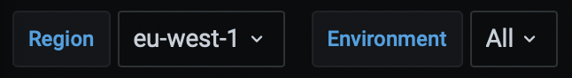
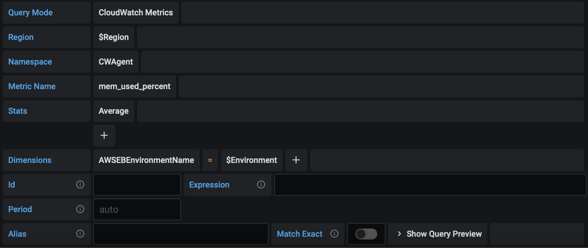
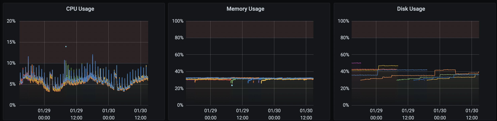

By default AWS Elastic Beanstalk only monitors CPU, Network, etc. but no in-machine statistics such as the amounf of free memory and disk space usage.
Their tutorial uses a CloudWatch Agent, but this only tags the instance ID (e.g. i-12345), which is very useless if you want to monitor in Grafana. What I want to see is the environment name (e.g. myapp-prod).
This solution uses a CloudWatch Agent to save metrics to CloudWatch as well, but tags all metrics with the environment name.
Save this file as /.ebextensions/cloudwatch.config to automatically monitor and tag these into CloudWatch. You can then easily import those into Grafana (or the tool of your liking).
packages:
rpm:
amazon-cloudwatch-agent: https://s3.amazonaws.com/amazoncloudwatch-agent/amazon_linux/amd64/latest/amazon-cloudwatch-agent.rpm
files:
"/home/ec2-user/amazon-cloudwatch-agent.json":
mode: "000755"
owner: root
group: root
content: |
{
"agent": {
"metrics_collection_interval": 60
},
"metrics": {
"append_dimensions": {
"InstanceId": "${aws:InstanceId}"
},
"metrics_collected": {
"mem": {
"measurement": [
"mem_total",
"mem_free",
"mem_used",
"mem_used_percent",
"mem_available",
"mem_available_percent"
],
"append_dimensions": {
"AWSEBEnvironmentName": "__EB_ENV__"
}
},
"cpu": {
"measurement": [
"cpu_time_active",
"cpu_time_nice",
"cpu_time_steal",
"cpu_usage_active",
"cpu_usage_idle",
"cpu_usage_iowait"
],
"append_dimensions": {
"AWSEBEnvironmentName": "__EB_ENV__"
}
},
"disk": {
"measurement": [
"disk_free",
"disk_total",
"disk_used",
"disk_used_percent"
],
"append_dimensions": {
"AWSEBEnvironmentName": "__EB_ENV__"
}
}
}
}
}
container_commands:
01_prepare_cloudwatch_agent_config:
command: |
EB_ENV="$(/opt/elasticbeanstalk/bin/get-config container -k environment_name)"
sed -i "s/__EB_ENV__/$EB_ENV/g" /home/ec2-user/amazon-cloudwatch-agent.json
02_run_cloudwatch_agent:
command: |
amazon-cloudwatch-agent-ctl -a fetch-config -m ec2 -c file:/home/ec2-user/amazon-cloudwatch-agent.json -sIn your Grafana dashboard, create two variables:

Name: Region
Type: Query
Data Source: CloudWatch
Query: regions()Name: Environment
Type: Query
Data Source: CloudWatch
Query: dimension_values($Region,CWAgent,mem_free,AWSEBEnvironmentName)And then create a Chart as follows:

You can make this a repeating row to monitor all your environments:

Good luck!
← All Posts